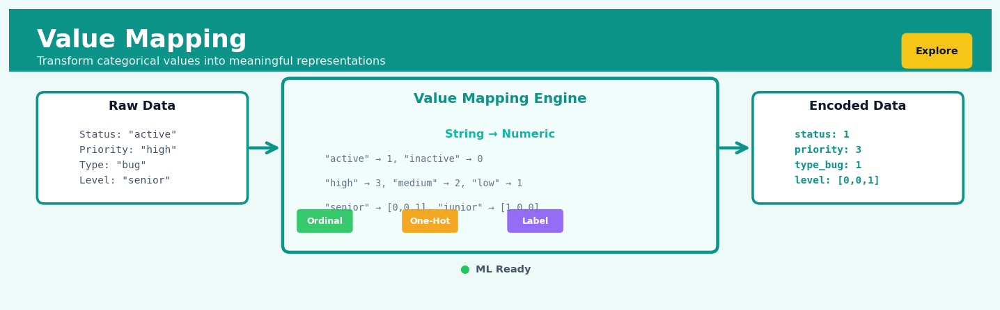

Value Mapping#


The biggest mistake I see teams make with value mapping is treating it as a one-time preprocessing step instead of a versioned transformation that needs to be stored and reused consistently across training and production. When your model sees priority values encoded as high=3, medium=2, low=1 during training but then production data gets encoded with a different scheme or order, you're essentially feeding your model garbage. Always save your mapping dictionaries as artifacts alongside your models, and consider using tools like sklearn's LabelEncoder with explicit class ordering to ensure your value transformations are deterministic and reproducible.
The 60-Second Version#
What it does: Value Mapping swaps one set of values in your data for another set according to rules you define—like find-and-replace for data categories.
When to use it: When your data uses codes, labels, or categories that need to be standardised, simplified, or translated into formats that other systems or people can understand.
What you get back: A transformed dataset where old values have been systematically replaced with new ones, ready for analysis or integration with other systems.
At a Glance
Difficulty |
Easy |
Typical runtime |
Seconds on 100K rows |
What you bring |
A dataset with categorical values and a mapping specification (old value → new value) |
What you get |
The same dataset with values replaced according to your rules |
Heuristix bucket |
Explore — Shaping & Transforming Data |
Value Mapping is only as good as the rules you define—incorrect mappings will systematically corrupt your data without warning.
Learning Objectives#
After reading this chapter, a business user will be able to:
Identify situations where categorical values need standardisation, consolidation, or reformatting to meet reporting requirements or system constraints.
Interpret value mapping outputs to verify that category transformations preserve the intended business meaning and correctly represent domain knowledge.
Specify mapping rules that consolidate fragmented categories, harmonise inconsistent labels, or prepare categorical data for integration across systems.
After reading this chapter, a data scientist will be able to:
Implement value mapping transformations that handle unmapped values, null entries, and case sensitivity while maintaining data lineage and auditability.
Choose between different mapping strategies (one-to-one, many-to-one, conditional mappings) based on cardinality reduction goals and downstream model requirements.
Validate mapping completeness by detecting unmapped values, identifying unintended collisions, and measuring information loss from category consolidation.
Overview#
Value Mapping is a deterministic data transformation technique that replaces values in a categorical or discrete variable with alternative values according to a predefined mapping specification. It belongs to the family of encoding and recoding methods within data preprocessing, serving as the foundation for tasks ranging from simple label standardisation to complex categorical consolidation. Unlike statistical encoding methods that derive mappings from data distributions, Value Mapping applies explicit, user-defined transformations that preserve semantic meaning while reshaping data for downstream analysis or system requirements.
When to Use This#
Use this when:
Standardising inconsistent categorical labels — When the same conceptual category appears with multiple spellings, abbreviations, or formats across data sources (e.g., “USA”, “U.S.A.”, “United States”, “US” all representing the same country), Value Mapping consolidates these into a single canonical form.
Translating codes to human-readable labels — When source systems store cryptic codes (e.g., “STAT_01”, “STAT_02”) that need conversion to meaningful labels (“Active”, “Inactive”) for reporting, visualisation, or business user consumption.
Collapsing granular categories into broader groups — When a variable has too many distinct values for effective analysis or modelling (e.g., mapping 50 job titles to 8 job families), Value Mapping enables principled aggregation based on business logic.
Harmonising data across merged datasets — When integrating data from multiple sources where the same concept is encoded differently (e.g., one system uses “M/F” while another uses “Male/Female”), Value Mapping creates consistency.
Preparing categorical variables for specific model requirements — When downstream algorithms or systems require particular value formats, orderings, or encodings that differ from the source representation.
Implementing business rules for categorisation — When business logic dictates specific groupings (e.g., mapping product SKUs to strategic product categories, or mapping postcode prefixes to sales regions).
Handling legacy system migrations — When transitioning between systems that use different coding schemes for the same entities, Value Mapping provides the translation layer.
Creating derived categorical variables — When new analytical dimensions need to be created from existing variables based on explicit rules (e.g., mapping age ranges to life-stage categories).
Do NOT use this when:
The mapping should be learned from data — If the appropriate encoding depends on statistical relationships (e.g., target encoding, frequency encoding), use data-driven encoding methods instead.
You need to handle unseen categories automatically — Value Mapping requires explicit specification; if new categories appear regularly and need automated handling, consider embedding methods or hierarchical encoding schemes.
The transformation is numeric and continuous — For mathematical transformations of continuous variables (scaling, normalisation, power transforms), use appropriate numerical transformation techniques rather than discrete mapping.
Questions This Answers#
Standardising Operations Across the Business#
Why are we getting different customer satisfaction ratings when our Dallas and Austin teams are using completely different response scales?
Can we compare last year’s “Very Satisfied” ratings with this year’s 5-star system, or are we looking at apples and oranges?
How do we consolidate product categories when the acquired company calls them something completely different than we do?
Our European offices use “SME” and “Mid-Market” but North America uses “MM” and “Small Business” — how do we roll this up into one quarterly report?
Making Sense of External Data and Legacy Systems#
Why can’t our new CRM system read the status codes from the old platform we used until 2022?
We’re buying third-party market data, but their industry classifications don’t match ours — how do we integrate this into our existing dashboards?
The vendor’s file uses state abbreviations but our system needs full state names — do we need to manually fix 50,000 records every month?
Can we pull in social media sentiment data when they label things “pos/neg/neu” and our system expects “positive/negative/neutral”?
Preparing Data for Decisions and Models#
Which customer segments should we target if our analytics tool only accepts numeric codes but our CRM stores descriptive labels?
How do we run a regional performance model when some territories are labeled by city names and others by postal codes?
Our predictive model requires standardised education levels, but applicants enter everything from “Bachelor’s” to “BS” to “4-year degree” — can we fix this systematically?
We need to benchmark against industry standards, but how do we map our custom job titles to the standard occupational codes the survey uses?
Should we simplify our 47 product sub-categories into 8 main groups so executives can actually understand the trend analysis?
How It Works#
Imagine you’re organising an international conference where attendees submitted their countries using whatever format they preferred. Your registration system now contains “USA”, “United States”, “U.S.A.”, “US”, and “America” — all meaning the same place. Before you can generate accurate attendance statistics by country, you need to standardise these entries. You create a lookup sheet: whenever you see “U.S.A.”, replace it with “United States”; whenever you see “US”, replace it with “United States”, and so on. You go through your attendee list row by row, checking each country entry against your lookup sheet and making the substitutions. This systematic find-and-replace operation is exactly what Value Mapping does with your data.
BEFORE MAPPING MAPPING RULES AFTER MAPPING
┌──────────────┐ ┌──────────┬─────────┐ ┌──────────────┐
│ Country │ │ From │ To │ │ Country │
├──────────────┤ ├──────────┼─────────┤ ├──────────────┤
│ USA │ ────┐ │ USA │ United │ │ United │
│ U.S.A. │ ────┼─→ │ U.S.A. │ States │ │ States │
│ US │ ────┤ │ US │ │ │ United │
│ America │ ────┤ │ America │ ↓ │ │ States │
│ Canada │ ────┘ │ Canada │ Canada │ │ United │
│ USA │ Look up └──────────┴─────────┘ │ States │
└──────────────┘ and replace each value │ Canada │
│ United │
│ States │
└──────────────┘
Step 1: Define your mapping rules. You create a specification that pairs each original value with its replacement value. This might be a simple two-column table: the left column lists values you want to find, the right column shows what to replace them with. Think of it as a translation dictionary where you look up words on the left and write down their translations from the right.
Step 2: Process each value individually. The algorithm examines one data value at a time, moving systematically through your dataset. For each value encountered, it asks: “Does this match anything in my mapping rules?”
Step 3: Apply the matching rule. When the algorithm finds a value that matches the left side of a mapping rule, it replaces that value with whatever appears on the right side of that rule. If “USA” is in your data and your rule says “USA” maps to “United States”, the algorithm swaps in “United States”.
Step 4: Handle unmatched values. When the algorithm encounters a value that doesn’t appear in your mapping rules — say, “Canada” when you’ve only defined rules for USA variations — it typically leaves that value unchanged. Some implementations let you specify default behaviours, like replacing unmatched values with “Unknown” or flagging them for review.
Step 5: Produce the transformed dataset. After examining every value, the algorithm outputs your dataset with all mappings applied. The structure remains identical — same rows, same columns — but the values now follow your standardisation rules.
The key insight: Value Mapping succeeds because human knowledge about what values should mean is more reliable than algorithmic guesses, letting you impose semantic consistency that preserves real-world meaning while making data analytically useful.
The Intuition#
Consider how a professional translator works with a bilingual dictionary. When translating a document from French to English, the translator consults a reference that provides exact correspondences: “maison” maps to “house”, “voiture” maps to “car”, and so forth. The dictionary is deterministic—the same French word always yields the same English word—and it is defined in advance by linguistic experts, not derived statistically from the document being translated. Value Mapping operates on precisely this principle: you provide the dictionary, and the system performs the translation.
This analogy extends further when we consider what happens with words not in the dictionary. A human translator encountering an unknown term must make a decision: leave it untranslated, use a default approximation, or flag it for special handling. Value Mapping faces the identical challenge with unmapped values. The configuration choice of how to handle unmapped values—preserve them, replace with a default, or raise an error—mirrors the translator’s strategic decision and has significant implications for data integrity.
The power of Value Mapping lies in its explicit, auditable nature. Unlike machine learning encodings that produce opaque numerical representations, a value map is a transparent business artefact that can be reviewed, version-controlled, and debated by stakeholders. When a regulator asks why certain loan applications were grouped as “high risk”, you can point to the explicit mapping from credit score bands to risk categories. This interpretability is not merely convenient—in regulated industries, it is often mandatory. The mapping specification serves as documentation of business logic embedded in the data transformation pipeline.
Understanding Value Mapping also requires appreciating its position in the broader encoding taxonomy. At one extreme, we have one-hot encoding, which makes no assumptions about categorical structure and treats each value as independent. At the other extreme, we have learned embeddings that discover latent structure from data. Value Mapping occupies a middle position: it imposes structure (the mapping) but that structure comes from domain expertise rather than statistical inference. This makes it the appropriate choice when the correct categorisation is known a priori and should not be influenced by the particular sample of data at hand.
The Mathematics#
Formal Problem Setup#
Let \(X\) be a categorical random variable taking values in a finite set \(\mathcal{V} = \{v_1, v_2, \ldots, v_n\}\), termed the source domain. A Value Mapping transformation produces a new variable \(Y\) taking values in the target domain \(\mathcal{W} = \{w_1, w_2, \ldots, w_m\}\).
The mapping is defined by a function \(f: \mathcal{V} \rightarrow \mathcal{W}\) specified explicitly through a set of ordered pairs:
For each observation \(x_i\) in a dataset, the transformed value is:
Mapping Function Properties#
The mapping function \(f\) has several important mathematical properties that determine its behaviour:
Surjectivity (onto): \(f\) is surjective if every element in \(\mathcal{W}\) is the image of at least one element in \(\mathcal{V}\):
In practice, surjectivity is not required—some target values may be defined but never used if their source values don’t appear in the data.
Injectivity (one-to-one): \(f\) is injective if distinct source values map to distinct target values:
When \(f\) is injective, the mapping is reversible; no information is lost. When \(f\) is not injective, multiple source values collapse to the same target value, and the transformation is lossy.
Bijectivity: When \(f\) is both injective and surjective (and \(|\mathcal{V}| = |\mathcal{W}|\)), the mapping is a bijection or one-to-one correspondence. This is the case for pure label translation without aggregation.
Cardinality Relationships#
The relationship between source and target domain cardinalities determines the mapping type:
For many-to-one mappings, define the consolidation ratio:
A higher consolidation ratio indicates more aggressive grouping. The compression factor measures information reduction:
Handling Unmapped Values#
Let \(\mathcal{V}^* \supseteq \mathcal{V}\) be the set of all values that may appear in practice, including those not specified in the mapping. For \(v^* \in \mathcal{V}^* \setminus \mathcal{V}\), we define the extended mapping function \(f^*\):
where \(\bot\) denotes an error condition that halts execution.
Composition of Mappings#
Value Mappings compose naturally. Given mappings \(f: \mathcal{V} \rightarrow \mathcal{W}\) and \(g: \mathcal{W} \rightarrow \mathcal{U}\), the composed mapping is:
This composition is associative but generally not commutative. In pipeline architectures, the order of mapping operations matters when intermediate representations differ.
Entropy Considerations#
The Shannon entropy of the source variable is:
After mapping, the entropy of the transformed variable is:
where \(p(w) = \sum_{v : f(v) = w} p(v)\).
For any mapping function \(f\), by the data processing inequality:
Equality holds if and only if \(f\) is injective. The information loss is quantified by:
Assumptions#
Completeness assumption: The mapping specification covers all values that will be encountered, or an appropriate unmapped value strategy is defined.
Determinism assumption: The same input value always produces the same output value—there is no stochastic component.
Independence assumption: The mapping of one observation does not depend on other observations in the dataset.
Stability assumption: The mapping specification is fixed at definition time and does not change during execution.
Understanding the Mathematics#
The Value Mapping Function#
The equation:
Read it aloud:
“This says: f is a function that takes values from set X and transforms them into values from set Y.”
What each symbol means:
f — the mapping function itself; the transformation rule we’re applying
X — the domain; the set of all original values that exist before mapping
Y — the codomain; the set of all possible values after mapping
→ — “maps to” or “transforms into”
A concrete numerical example:
Suppose you’re standardizing country names in an e-commerce dataset. Your original data contains X = {“US”, “USA”, “United States”, “U.S.A.”} and you want to map everything to Y = {“United States”}. The function f takes “USA” as input and returns “United States” as output.
Why this equation matters:
This formalizes that Value Mapping is deterministic—every input from X produces exactly one predictable output in Y, ensuring consistency across your entire dataset.
The Specific Mapping Rule#
The equation:
Read it aloud:
“This says: the function f applied to input value x-sub-i equals output value y-sub-i, where the pair of x-sub-i and y-sub-i exists in the mapping specification M.”
What each symbol means:
x_i — a specific input value (the i-th original value)
y_i — the corresponding output value (what x_i becomes)
M — the mapping specification; the complete dictionary of (input, output) pairs
∈ — “is an element of” or “exists in”
A concrete numerical example:
You’re recoding customer satisfaction ratings. Your mapping specification M contains: (1→”Poor”), (2→”Fair”), (3→”Good”), (4→”Excellent”). When f encounters x_i = 3, it looks up the pair (3, “Good”) in M and returns y_i = “Good”. When it encounters x_i = 4, it returns y_i = “Excellent”.
Why this equation matters:
This defines the lookup mechanism—without a valid pair in M, the mapping cannot proceed, which is why completeness of your mapping specification is critical.
Domain Coverage#
The equation:
Read it aloud:
“This says: the domain of function f is a subset of (or equal to) the set X.”
What each symbol means:
dom(f) — the actual values that f can successfully transform
⊆ — “is a subset of or equal to”
X — the complete set of possible input values
A concrete numerical example:
Your customer database has X = {“Silver”, “Gold”, “Platinum”, “Diamond”, null} for membership tiers. You create a mapping function f with only three pairs: Silver→1, Gold→2, Platinum→3. Here, dom(f) = {“Silver”, “Gold”, “Platinum”}, which is a proper subset of X because “Diamond” and null are not covered. When f encounters “Diamond”, it fails.
Why this equation matters:
This exposes the gap between what exists in your data and what your mapping handles—unhandled values cause errors or missing data in production systems.
Cardinality Relationships#
The equation:
Read it aloud:
“This says: the cardinality (size) of set X is greater than or equal to the cardinality of set Y.”
What each symbol means:
|X| — the number of distinct values in the input set
|Y| — the number of distinct values in the output set
≥ — “is greater than or equal to”
A concrete numerical example:
You’re consolidating 47 different product categories into 8 major groups. Here |X| = 47 and |Y| = 8, so |X| ≥ |Y| holds true. This is a many-to-one mapping: “Smartphones”, “Laptops”, and “Tablets” all map to “Electronics”. Conversely, if you tried to expand 8 categories into 47 subcategories without additional information, you’d need arbitrary rules because one input can’t deterministically produce multiple outputs.
Why this equation matters:
This reveals whether you’re consolidating (reducing complexity) or expanding (adding detail)—consolidation is safe and common; expansion requires external information and risks ambiguity.
The Big Picture#
The mathematics of Value Mapping establishes it as a deterministic lookup system governed by explicit correspondence rules. We use this particular mathematical framework—function theory and set notation—because it guarantees that each input produces exactly one output, eliminating ambiguity in data transformation. The formalism also reveals critical constraints: your mapping must cover every value you’ll encounter (domain coverage), and the relationship between input and output cardinalities determines whether you’re simplifying or enriching your data. At its heart, Value Mapping mathematics answers one question: “Can I reliably convert every value I have into every value I need, following a consistent rule book?”
Python Implementation#
import pandas as pd
import numpy as np
# =============================================================================
# Example 1: Basic Value Mapping with pandas
# =============================================================================
# Create sample data with inconsistent country codes
np.random.seed(42)
data = pd.DataFrame({
'customer_id': range(1, 101),
'country_raw': np.random.choice(
['USA', 'U.S.A.', 'United States', 'UK', 'U.K.', 'United Kingdom',
'DE', 'Germany', 'FR', 'France'],
size=100
),
'status_code': np.random.choice(['A', 'I', 'P', 'S', 'X'], size=100)
})
print("Original data sample:")
print(data.head(10))
print(f"\nUnique country values: {data['country_raw'].unique()}")
# Define the value mapping as a dictionary
country_mapping = {
'USA': 'United States',
'U.S.A.': 'United States',
'United States': 'United States',
'UK': 'United Kingdom',
'U.K.': 'United Kingdom',
'United Kingdom': 'United Kingdom',
'DE': 'Germany',
'Germany': 'Germany',
'FR': 'France',
'France': 'France'
}
# Apply the mapping using pandas map() method
data['country_clean'] = data['country_raw'].map(country_mapping)
print("\nAfter country standardisation:")
print(data[['customer_id', 'country_raw', 'country_clean']].head(10))
print(f"\nUnique standardised values: {data['country_clean'].unique()}")
# =============================================================================
# Example 2: Mapping with Unmapped Value Handling
# =============================================================================
# Define status code mapping (intentionally incomplete)
status_mapping = {
'A': 'Active',
'I': 'Inactive',
'P': 'Pending'
# Note: 'S' and 'X' are not mapped
}
# Strategy 1: Preserve unmapped values (default pandas behaviour with map)
# Using a function to handle unmapped values explicitly
def map_with_preserve(value, mapping):
"""Map value, preserving unmapped values as-is."""
return mapping.get(value, value)
data['status_preserve'] = data['status_code'].apply(
lambda x: map_with_preserve(x, status_mapping)
)
# Strategy 2: Replace unmapped with default
def map_with_default(value, mapping, default='Unknown'):
"""Map value, replacing unmapped with default."""
return mapping.get(value, default)
data['status_default'] = data['status_code'].apply(
lambda x: map_with_default(x, status_mapping, 'Unknown')
)
# Strategy 3: Use pandas replace() which preserves unmapped by default
data['status_replace'] = data['status_code'].replace(status_mapping)
print("\nStatus mapping with different unmapped strategies:")
print(data[['status_code', 'status_preserve', 'status_default', 'status_replace']].drop_duplicates())
# =============================================================================
# Example 3: Many-to-One Consolidation Mapping
# =============================================================================
# Create data with granular job titles
job_data = pd.DataFrame({
'employee_id': range(1, 201),
'job_title': np.random.choice([
'Junior Software Engineer', 'Software Engineer', 'Senior Software Engineer',
'Staff Engineer', 'Principal Engineer', 'Junior Data Analyst',
'Data Analyst', 'Senior Data Analyst', 'Sales Representative',
'Account Executive', 'Sales Manager', 'Regional Sales Director',
'Marketing Coordinator', 'Marketing Manager', 'HR Generalist',
'HR Manager', 'Financial Analyst', 'Senior Accountant'
], size=200)
})
# Define consolidation mapping to job families
job_family_mapping = {
'Junior Software Engineer': 'Engineering',
'Software Engineer': 'Engineering',
'Senior Software Engineer': 'Engineering',
'Staff Engineer': 'Engineering',
'Principal Engineer': 'Engineering',
'Junior Data Analyst': 'Analytics',
'Data Analyst': 'Analytics',
'Senior Data Analyst': 'Analytics',
'Sales Representative': 'Sales',
'Account Executive': 'Sales',
'Sales Manager': 'Sales',
'Regional Sales Director': 'Sales',
'Marketing Coordinator': 'Marketing',
'Marketing Manager': 'Marketing',
'HR Generalist': 'Human Resources',
'HR Manager': 'Human Resources',
'Financial Analyst': 'Finance',
'Senior Accountant': 'Finance'
}
job_data['job_family'] = job_data['job_title'].map(job_family_mapping)
# Calculate consolidation metrics
source_cardinality = job_data['job_title'].nunique()
target_cardinality = job_data['job_family'].nunique()
consolidation_ratio = source_cardinality / target_cardinality
print(f"\nJob Title Consolidation Metrics:")
print(f" Source cardinality: {source_cardinality}")
print(f" Target cardinality: {target_cardinality}")
print(f" Consolidation ratio: {consolidation_ratio:.2f}")
# Distribution comparison
print("\nOriginal job title distribution:")
print(job_data['job_title'].value_counts().head(10))
print("\nConsolidated job family distribution:")
print(job_data['job_family'].value_counts())
# =============================================================================
# Example 4: Using sklearn's LabelEncoder for Reversible Mapping
# =============================================================================
from sklearn.preprocessing import LabelEncoder
# LabelEncoder creates an automatic integer mapping (useful for some ML models)
le = LabelEncoder()
job_data['job_family_
## Visualisations


## Using This in Heuristix
### What You'll Need
The Value Mapping node expects **categorical or discrete data** in one or more columns. You can work with text labels, numeric codes, or any discrete values that need standardising or recoding.
**Before mapping:**
| product_size | status_code | region |
|--------------|-------------|---------|
| S | 1 | Northeast |
| small | 1 | NE |
| Medium | 2 | South |
| L | 3 | northeast |
**After mapping:**
| product_size | status_code | region | size_standard |
|--------------|-------------|---------|----------------|
| S | 1 | Northeast | Small |
| small | 1 | NE | Small |
| Medium | 2 | South | Medium |
| L | 3 | northeast | Large |
The node works with any data shape—from a few hundred rows to millions. Just make sure your target columns contain discrete values, not continuous numbers.
### Configuration Parameters
| Parameter | What It Does | Default | When to Change It |
|-----------|--------------|---------|-------------------|
| **Source Column** | Which column to transform | (none) | Always set this—it's your starting point |
| **Mapping Dictionary** | The value pairs defining your transformation (old → new) | {} | Define all conversions you need. Can handle many-to-one mappings (multiple old values → single new value) |
| **Output Column Name** | Name for the transformed column | `{source}_mapped` | Use descriptive names like `status_clean` or `category_standard` |
| **Handle Unmapped Values** | What to do with values not in your mapping | Keep original | Change to "Set to null" if unmapped values signal data quality issues, or "Set to default" with a catch-all label |
| **Default Value** | Fallback value when "Set to default" is selected | "Other" | Choose something meaningful like "Unknown" or "Uncategorised" |
| **Case Sensitive** | Whether "Active" and "active" are treated as different | No | Enable if your data legitimately uses case to distinguish meaning |
### What You'll See
**Output columns:** The node adds your newly mapped column alongside the original, so you can verify transformations before dropping the source column.
**Mapping summary panel:** Shows how many values were mapped, unmapped values detected, and the distribution of your new categories. This is invaluable for catching typos in your mapping dictionary.
**Preview table:** Displays before/after rows side-by-side, making it easy to spot-check your transformations.
### Connecting Downstream
Value Mapping typically flows into:
- **Grouping & Aggregation** nodes—once categories are standardised, aggregations become meaningful
- **Filter** nodes—your clean categories make filtering reliable
- **Encoding** nodes—for machine learning prep, map to human-readable labels first, then encode to numeric
- **Visualisation** nodes—charts and dashboards work much better with consistent category labels
### Quick Start: Standardising Status Labels
1. **Drag** the Value Mapping node onto your canvas and connect your dataset
2. **Select** the messy status column (e.g., containing "active", "Active", "1", "live")
3. **Define your mapping** in the dictionary: `{"active": "Active", "Active": "Active", "1": "Active", "live": "Active"}`
4. **Name the output** something clear like `status_clean`
5. **Set Handle Unmapped** to "Set to null" to flag data quality issues
6. **Run the node** and check the mapping summary for any unexpected unmapped values
7. **Review** the preview table to confirm transformations look right
### Tips from the Field
**Build mappings incrementally.** Start with your most common values, run the node, check unmapped values in the summary, then add more mappings. Don't try to anticipate every variation upfront.
**Use many-to-one mappings liberally.** They're perfect for consolidating variations: `{"cancelled", "canceled", "CANCELLED"}` all map to `"Cancelled"`.
**Keep original columns during development.** Only drop source columns once you're confident in your mappings. That preview comparison saves debugging time.
**Export your mapping dictionaries.** Once you've perfected a mapping for customer segments or product categories, save it. You'll use it again on next month's data.
**Chain multiple Value Mapping nodes** when different columns need different transformations—it's clearer than one complex node doing everything.
## Config Recipes
### Recipe 1: Quick Exploratory Standardisation
**When to use:** Initial data profiling when you need to quickly unify inconsistent categorical labels across imported datasets without validating every edge case.
**Settings:**
| Parameter | Value | Why |
|-----------|-------|-----|
| `case_sensitive` | `False` | Catches "Male"/"male"/"MALE" variations automatically |
| `strict_mode` | `False` | Allows unmapped values to pass through unchanged |
| `map_dict` | `{"yes": 1, "no": 0, "y": 1, "n": 0}` | Handles only the most common variants |
| `default_value` | `None` | Preserves original values for manual inspection later |
| `create_backup` | `False` | Skips column duplication to reduce memory overhead |
**What you get:** A rapidly transformed dataset where common inconsistencies are resolved, leaving exceptions visible for review.
**Trade-off:** Unmapped edge cases remain inconsistent, requiring a second cleanup pass before production deployment.
---
### Recipe 2: Production-Grade Controlled Mapping
**When to use:** Deploying categorical transformations in production pipelines where data quality enforcement and audit trails are mandatory.
**Settings:**
| Parameter | Value | Why |
|-----------|-------|-----|
| `case_sensitive` | `True` | Enforces exact matching to prevent silent misclassifications |
| `strict_mode` | `True` | Raises exceptions on unmapped values instead of silent failures |
| `map_dict` | Comprehensive dictionary covering all known values | Explicit handling of every legitimate input |
| `default_value` | Not set (will error) | Forces deliberate handling of unexpected data |
| `create_backup` | `True` | Enables rollback and comparison auditing |
| `log_unmapped` | `True` | Records all mapping failures for monitoring |
**What you get:** Deterministic, auditable transformations that fail loudly on data drift or quality issues.
**Trade-off:** Requires comprehensive mapping specification upfront and rejects novel values that might be legitimate.
---
### Recipe 3: Multi-Source Geographic Consolidation
**When to use:** Merging datasets from different systems where geographic identifiers use incompatible formats (ISO codes vs. full names vs. abbreviations).
**Settings:**
| Parameter | Value | Why |
|-----------|-------|-----|
| `case_sensitive` | `False` | Handles "USA"/"usa" discrepancies |
| `map_dict` | `{"USA": "US", "United States": "US", "U.S.A.": "US", ...}` | Many-to-one consolidation |
| `strict_mode` | `True` | Prevents silently accepting invalid country names |
| `apply_strip` | `True` | Removes whitespace from " USA " variations |
| `chain_mappings` | `True` | Applies sequential transformations for multi-step normalization |
**What you get:** Unified geographic identifiers enabling reliable cross-dataset joins.
**Trade-off:** Loses original format information that might carry metadata value in specialized contexts.
---
### Recipe 4: Survey Response Sentiment Extraction
**When to use:** Converting open-ended satisfaction survey responses into analyzable sentiment scores when full NLP is overkill.
**Settings:**
| Parameter | Value | Why |
|-----------|-------|-----|
| `map_dict` | `{"love": 2, "great": 2, "good": 1, "okay": 0, "poor": -1, "hate": -2, ...}` | Ordinal sentiment encoding |
| `partial_match` | `True` | Catches "loved it" and "really great" |
| `match_priority` | `"longest_first"` | Prevents "not great" matching "great" |
| `aggregate_function` | `"mean"` | Averages multiple keyword matches per response |
| `default_value` | `0` | Neutral sentiment for ambiguous responses |
**What you get:** Rapid sentiment quantification from text without deploying ML models.
**Trade-off:** Misses nuanced language and context that sophisticated NLP would capture.
## Business Applications
**Financial Services**
A regional US credit union with 150,000 members was drowning in payment dispute data, where merchant names appeared in dozens of variants—"AMZN Mktp US", "Amazon.com", "AMZ*Digital", "Amazon Prime". Their fraud detection system treated each as a separate entity, fragmenting transaction patterns and missing 23% of suspicious activity clusters. Value Mapping consolidated 847 merchant name variations into 214 standardised entities using a curated lookup table that mapped abbreviations, misspellings, and legacy codes to canonical names. The transformation reduced false negatives in fraud detection by 31% and cut dispute resolution time from 4.2 days to 90 minutes, saving an estimated $780,000 annually in operational costs and prevented fraud losses.
**Retail**
An e-commerce retailer with 3.2M SKUs across five European markets faced a critical product categorisation problem: suppliers used inconsistent size designations—"M", "Medium", "38", "10 (UK)", "Taille 38"—making size-based filtering unreliable and driving a 19% cart abandonment rate on clothing items. They deployed Value Mapping to create market-specific transformation tables that converted all size notations to a unified internal schema (e.g., "EU_38", "UK_10", "US_M") while maintaining display preferences per locale. Post-implementation, size filter accuracy reached 99.2%, cart abandonment on apparel dropped to 11.4%, and customer service inquiries about sizing fell by 67%, recovering approximately €2.1M in previously lost revenue.
**Healthcare**
A hospital network spanning twelve facilities struggled with physician referral data where department names varied wildly—"Cardio", "Heart Center", "Cardiovascular Med", "Cardiac Unit"—creating artificial silos in their analytics and preventing accurate patient flow analysis. Value Mapping standardised 342 department name variants across all locations to 47 canonical department codes, enabling the network to identify that 28% of cardiology referrals were being routed to general internal medicine due to naming confusion. Correcting these routing inefficiencies reduced average specialist wait times from 31 days to 18 days and improved care coordination scores by 41 points in patient satisfaction surveys.
**Insurance**
A multinational property insurer processing 890,000 claims annually found that weather event descriptions varied wildly across adjuster notes—"hurricane", "tropical storm", "severe wind", "storm surge". Value Mapping transformed free-text weather references into a controlled vocabulary aligned with catastrophe modelling standards, mapping 2,300+ weather phrase variants to 89 standardised event types. This enabled accurate CAT model application, reducing reserves over-allocation by $18M and improving reinsurance treaty utilisation by identifying previously misclassified events that qualified for coverage.
**Manufacturing**
A automotive parts manufacturer with facilities in seven countries maintained separate ERP systems with incompatible status codes for production stages—facility A used "QC_PASS", facility B used "Q-OK", facility C used numeric code "405". Value Mapping created bidirectional translation tables that harmonised 127 status code variations across legacy systems without requiring costly ERP consolidation. Real-time production visibility improved from 43% to 97% of SKUs, reducing expediting costs by $340,000 quarterly and preventing three major delivery penalties.
**Logistics**
A last-mile delivery company serving 45 cities discovered that address data from merchant integrations contained 600+ variations of direction indicators—"North", "N", "N.", "Nth", "NO"—causing geocoding failures on 8% of packages. Value Mapping standardised directional prefixes, suffixes, street type abbreviations, and unit designators before geocoding, lifting first-attempt delivery success from 87.3% to 94.8%, saving 12,000 driver-hours monthly.
**Marketing**
A marketing agency managing campaigns across platforms faced UTM parameter chaos where campaign sources appeared as "facebook", "Facebook", "fb", "FB", "meta". Value Mapping applied case-normalisation and synonym consolidation rules, creating unified attribution that revealed Facebook was actually delivering 34% higher ROI than fragmented data suggested, redirecting $450,000 in previously misallocated budget.
**Public Sector**
A metropolitan transit authority with legacy and modern ticketing systems needed to reconcile twelve different fare category codes. Value Mapping unified "Senior", "Sr.", "Elderly", "60+" variations into standardised demographic segments, revealing that senior ridership was underreported by 22% and justifying expansion of accessible services to underserved routes.
## Worked Example
Sarah Chen, a senior data analyst at UrbanCart, a growing online grocery delivery platform, was halfway through her morning coffee when her manager forwarded an urgent Slack message from the operations team. Customer complaints about delivery experiences had spiked 23% over the past quarter, but the support tickets were a mess—delivery issues were tagged inconsistently across three different legacy systems that had been merged during a recent acquisition.
"We need to understand what's actually going wrong with deliveries," the VP of Operations had written. "But every system uses different codes. Can you make sense of this?"
Sarah pulled data from all three ticketing systems and immediately saw the problem. Here's what the combined dataset looked like:
| ticket_id | issue_code | priority | resolution_time | region |
|-----------|------------|----------|-----------------|---------|
| TK-10234 | LATE_DELIV | high | 45 | northeast |
| TK-10235 | delivery_delayed | med | 67 | west |
| TK-10236 | wrong_address | low | 12 | south |
| TK-10237 | ADDR_ERROR | high | 89 | northeast |
| TK-10238 | damaged_goods | high | 120 | west |
The `issue_code` column was chaos. System A used uppercase codes like `LATE_DELIV`, System B used lowercase with underscores, and System C had completely different terminology—`ADDR_ERROR` versus `wrong_address` for essentially the same problem. There was no way to aggregate complaint types meaningfully without standardizing these labels first.
Sarah opened her Jupyter notebook and sketched out a mapping strategy. She needed to consolidate the delivery issue categories into five standardized buckets: `timing`, `location`, `product_condition`, `missing_items`, and `other`. She created a Python dictionary that would serve as her mapping specification, carefully grouping related issues together based on her conversation with the support team leads:
```python
import pandas as pd
# Sarah's actual delivery issue data
data = pd.read_csv('delivery_tickets.csv')
# Define the value mapping based on support team input
issue_mapping = {
'LATE_DELIV': 'timing',
'delivery_delayed': 'timing',
'early_arrival': 'timing',
'ADDR_ERROR': 'location',
'wrong_address': 'location',
'cant_find_location': 'location',
'damaged_goods': 'product_condition',
'DAMAGED': 'product_condition',
'spoiled_food': 'product_condition',
'missing_items': 'missing_items',
'INCOMPLETE_ORDER': 'missing_items',
'wrong_items': 'other'
}
# Apply the mapping
data['issue_category'] = data['issue_code'].map(issue_mapping)
# Handle unmapped values
data['issue_category'].fillna('other', inplace=True)
# Group by standardized category
category_summary = data.groupby('issue_category').agg({
'ticket_id': 'count',
'resolution_time': 'mean'
}).round(1)
print(category_summary)
When Sarah ran the transformation, the results crystallized immediately:
issue_category |
ticket_count |
avg_resolution_time |
|---|---|---|
timing |
3,847 |
52.3 |
location |
2,156 |
78.4 |
product_condition |
1,923 |
95.7 |
missing_items |
1,634 |
41.2 |
other |
892 |
33.5 |
The numbers told a story that had been invisible before. While timing issues were the most frequent complaint, location-related problems took 50% longer to resolve on average. Product condition issues—damaged or spoiled goods—had the worst resolution times at nearly 96 minutes, likely because they required coordination between delivery drivers, warehouse teams, and customer service.
Sarah’s insight went deeper. When she cross-tabulated the standardized categories with region, she discovered that the northeast region had 3.2x more location-related issues than other areas. A quick follow-up revealed that the northeast team was still using outdated GPS coordinates from before a recent municipal address system update.
Two weeks later, Sarah presented her findings in the quarterly operations review. The VP of Operations immediately allocated budget for two initiatives: updated GPS data for the northeast, and dedicated product-handling training for warehouse staff in the top three metros. Within six weeks, product condition complaint resolution times dropped by 34%, and the northeast location issue rate fell by 67%.
What Sarah Would Do Differently
Looking back, Sarah wished she’d documented her mapping decisions more formally in a versioned configuration file rather than a Python dictionary. When the support team wanted to add new issue codes three months later, she had to remember her original logic from memory. She also realized that some values genuinely belonged in multiple categories—a late delivery to the wrong address was both a timing and location issue—but her simple mapping forced a single category choice. A more sophisticated tagging system might have served the business better long-term.
Interpreting Your Results#
You’ve just run your value mapping transformation. Your screen shows before-and-after value counts, maybe some category distributions, and a column full of newly transformed data. Here’s exactly what you’re looking at and what it means.
The Mapping Success Rate#
What it tells you: This metric shows the percentage of values that successfully matched your mapping specification. If you mapped 10,000 rows and 9,500 found a match in your mapping dictionary, your success rate is 95%.
Concrete benchmarks:
95–100%: Excellent. Your mapping specification is comprehensive and matches production data reality.
80–94%: Acceptable for exploratory work, but investigate unmapped values before deployment. These gaps often reveal data quality issues or evolving category sets.
Below 80%: Stop. Your mapping specification is fundamentally misaligned with your data. You’re either working with the wrong mapping table or your source data has changed significantly.
Red flags: A sudden drop in mapping rate between development and production data indicates schema drift—new categories have appeared that your mapping doesn’t account for. Any unmapped values that represent more than 5% of your total volume individually deserve immediate investigation.
Unmapped Values Table#
What it tells you: This shows every distinct value that didn’t find a match in your mapping, along with its frequency. You’re looking at the gaps in your transformation logic.
How to read it: Sort by frequency descending. The top entries are your highest-impact gaps. An unmapped value appearing 3,000 times is a data integrity crisis. One appearing twice is a curiosity.
Red flags:
Null or empty strings appearing frequently: Your upstream data pipeline has broken. These should typically be handled explicitly in your mapping specification.
Typos or formatting variations (e.g., “New York”, “new york”, “NEW YORK” all appearing): Your mapping needs standardisation logic applied before transformation.
Date values or numeric IDs: Wrong column selected—you’re trying to map continuous data as categorical.
Before/After Distribution Comparison#
What it tells you: Charts or tables showing the frequency of categories before mapping versus after. This reveals whether your consolidation logic makes semantic sense.
What good looks like: If you mapped 50 US state abbreviations to 4 regions (Northeast, South, Midwest, West), you should see roughly balanced regions unless your data has genuine geographic skew. The “after” distribution should tell a coherent story about your data’s natural groupings.
Red flags:
One category dominates after mapping (>70% of records): Your consolidation is too aggressive. You’ve collapsed meaningful distinctions into an “everything else” bucket.
More categories after mapping than before: You’ve likely introduced a many-to-many relationship or your mapping has duplicate keys. Check your mapping specification for errors.
Empty categories in your target set: Your mapping references categories that don’t exist in your source data. Clean up your mapping table to reflect actual data.
Reading Multiple Outputs Together#
A 98% mapping rate with 30 low-frequency unmapped values (each <10 occurrences) signals clean data with natural variation—safe to proceed. A 88% mapping rate with 3 high-frequency unmapped values signals systematic data quality issues—investigate before continuing.
Check whether unmapped values cluster around particular patterns (all dates, all containing special characters, all nulls). Patterns indicate fixable pipeline issues. Random unmapped values indicate incomplete business logic in your mapping specification.
Sanity Check Checklist#
Row count unchanged: Input rows = output rows. Value mapping is 1:1, never drops data.
All mapped values exist in your specification: Spot-check 5 transformed values and confirm each appears in your mapping table’s target column.
No unintended nulls: If nulls increased after mapping, you’ve created them—likely through unmapped values being coerced to null.
Mapping direction correct: Verify you didn’t accidentally map backwards (target to source instead of source to target).
Sample reverse lookup: Pick a transformed value, find its original, confirm the mapping makes business sense.
Good Enough to Act On?#
Proceed with confidence when your mapping success rate exceeds 95%, no single unmapped value represents more than 2% of records, and your after-distribution passes the “can I explain this to a stakeholder” test.
Don’t proceed if you can’t account for where unmapped values came from or if your consolidation has collapsed categories so aggressively that you’ve lost analytical signal. Fix your mapping specification first—value mapping errors compound in every downstream analysis.
Decision Guidance#
What This Result Is Telling You#
When value mapping has been applied to your data, you’re looking at categorical information that has been deliberately reorganised to serve a specific business purpose. This isn’t about discovering hidden patterns—it’s about enforcing a conscious decision to group, rename, or restructure how your organisation classifies things. For example, if your sales team uses twelve different product category names but your financial reporting needs only four, value mapping creates that bridge. The result tells you whether your data can now speak the language your business processes require.
The quality of your value mapping reflects the clarity of your business logic. When you see consistent, complete transformations with no unmapped residuals, it signals that your categorical definitions align well with operational reality. Conversely, when you encounter numerous “unmapped” or “other” categories absorbing significant data volume, you’re seeing evidence that your business taxonomy doesn’t match how products, customers, or transactions actually behave in the real world.
Most importantly, value mapping results reveal whether your organisation can reliably move data between systems, departments, or reporting frameworks. If 95% of customer records map cleanly from sales codes to marketing segments, you can trust cross-functional analytics. If only 60% map successfully, any strategy built on that integration will rest on a foundation of guesswork and approximation.
Decision Points#
If you see this… |
It means… |
Recommended action |
Who acts on this |
|---|---|---|---|
>98% of records successfully mapped with <2% in “unmapped” category |
Your business taxonomy aligns well with operational reality |
Proceed with production deployment; establish monitoring for drift |
Data engineering team; schedule quarterly taxonomy review with business owners |
5–15% of records falling into “other” or catch-all categories |
Significant edge cases exist that don’t fit your classification scheme |
Document these exceptions; assess if they represent emerging segments or data quality issues |
Business analyst to investigate with department heads; may require taxonomy expansion |
Frequent mapping changes requested (>monthly for stable domains) |
Business definitions are unstable or mapping logic was poorly specified |
Pause automation; convene stakeholders to establish authoritative category definitions |
Head of analytics with department leaders; create formal governance process |
Different departments using conflicting mappings for same source data |
Organisational silos creating incompatible interpretations |
Mandate single source of truth; migrate all teams to canonical mapping |
Chief Data Officer or equivalent; requires executive sponsorship |
When to Proceed vs. Investigate Further#
Proceed with confidence when:
Mapping coverage exceeds 95% of records with defined business meaning for all target categories
Stakeholders from all consuming departments have reviewed and approved the mapping specification
Audit trail exists documenting the business rationale for each mapping decision
Automated validation confirms no unmapped values have appeared in the last three data refresh cycles
Proceed with caution when:
Mapping coverage falls between 85–95%, but exceptions are well-documented and represent genuinely rare cases
Source data categories are known to evolve (new product lines, emerging customer segments), requiring regular mapping updates
Multiple legacy systems feed the same target categories, creating potential for inconsistent interpretation
Investigate before acting when:
More than 10% of records fall into “other,” “unmapped,” or generic catch-all categories
High-value transactions or strategic customer segments are disproportionately represented in unmapped records
Business users report confusion about what target categories actually represent
Do not use these results when:
No formal documentation exists explaining the business logic behind mapping decisions
Mappings were created by technical staff without domain expert validation
Source categories have changed but mappings have not been reviewed in over 12 months
Different business units are making decisions based on incompatible mapping versions
The Cost of Getting This Wrong#
When poorly conceived value mappings enter production systems, they don’t fail loudly—they fail silently, poisoning decisions for months before anyone notices. A retail company that incorrectly maps seasonal products into year-round categories will systematically understock in peak periods and overstock in troughs, tying up working capital and losing sales simultaneously. Marketing teams launching campaigns based on customer segments created through hasty mapping waste their entire budget reaching the wrong audiences, then conclude that the channel doesn’t work rather than recognising their targeting was flawed from the start. Perhaps most insidiously, executives making strategic resource allocation decisions based on revenue reports that consolidate categories incorrectly will systematically defund profitable product lines while doubling down on poor performers, because the numbers told a story that never reflected reality. The organisation doesn’t just lose the immediate opportunity—it learns the wrong lessons and compounds the error in future planning cycles.
Common Pitfalls#
The Ghost Category Problem
The Story: A marketing analyst was consolidating product categories for a campaign dashboard. They created a value mapping to group 47 product types into 8 major categories. Three months later, the sales team reported that “accessories” revenue had mysteriously jumped 40%. Investigation revealed that 12 new product types had been added to the catalog but weren’t in the mapping specification. The system defaulted these unmapped values to NULL, which the downstream report interpreted as “accessories” through a secondary default rule buried in legacy code. The analyst had concluded growth was real; it was actually a data routing error.
Why it happens: Categorical systems evolve while mapping specifications remain static. Teams assume their mappings are exhaustive without building fail-safes for unexpected values.
How to detect it: Compare DISTINCT(source_column) counts before and after mapping. If unmapped values exist, you’ll see NULLs or fewer distinct output categories than expected. Run value_counts() on unmapped values regularly.
The fix: Implement an explicit “Other” or “Unmapped” category and log all values that fall into it for review.
The One-Way Door
The Story: A junior data scientist needed to standardise country names across three merged datasets. They created a mapping that converted variations like “USA”, “United States”, “US”, and “America” all to “US”. Six months later, legal compliance required separating “United States” (the country) from “America” (used in some systems to mean North/South America regions). The original distinctions were permanently lost. They concluded they’d need to re-extract two years of historical data from source systems.
Why it happens: Teams focus on immediate analytical needs without considering whether the transformation should be reversible. Value mapping feels simple, so documentation of original values gets skipped.
How to detect it: Check if your mapping specification is many-to-one without preserving source values. If multiple inputs map to the same output and you haven’t kept the original column, you’ve created an irreversible transformation.
The fix: Always preserve the original column alongside the mapped version, or maintain a comprehensive mapping log with timestamps.
The Case Sensitivity Trap
The Story: An operations analyst built a value mapping to categorise customer feedback tags. They mapped “Urgent” → “High Priority” and “urgent” → stayed as “urgent” because the mapping dictionary was case-sensitive. The executive dashboard showed that only 3% of issues were “High Priority” when the actual figure was 41%. They concluded their service quality had improved dramatically and reallocated support staff accordingly.
Why it happens: Python dictionaries, SQL CASE statements, and Excel VLOOKUP all handle case sensitivity differently, and analysts assume their tool’s default behavior matches their intent.
How to detect it: Run value_counts() on your source data and check for case variations. Count distinct values after applying .lower() or .upper() and compare to the original distinct count.
The fix: Standardise case before mapping using .str.lower() or equivalent, or use case-insensitive matching functions.
The Slow Drift
The Story: A healthcare data engineer created a mapping for diagnosis codes that was accurate at implementation. Over 18 months, the medical coding team gradually adopted new conventions—“Type II Diabetes” became “T2DM” in newer records. Nobody updated the mapping specification. When a researcher compared 2022 to 2024 diabetes rates, they showed a 60% decline in diagnoses. They concluded a public health intervention had been remarkably successful when in fact they were measuring mapping decay.
Why it happens: Mapping specifications are created once and treated as static infrastructure rather than living documentation requiring maintenance.
How to detect it: Track the percentage of unmapped/default values over time. A rising trend indicates specification drift. Monitor COUNT(DISTINCT source_value) across time windows—new values appearing suggest your mapping is aging.
The fix: Schedule quarterly mapping audits and implement automated alerts when unmapped value percentages exceed historical baselines.
The Hidden Hierarchy
The Story: An analyst mapped sales regions into “North”, “South”, “East”, “West”. Later, they needed to group these into “Coastal” vs “Interior” but had already flattened state-level detail. Their mapping had destroyed a natural hierarchy (State → Region → Coast/Interior), forcing them to rebuild from scratch.
Why it happens: Single-layer mappings feel sufficient for current needs, and hierarchical thinking requires extra planning effort that seems unnecessary at the time.
How to detect it: Ask yourself: “Could I need to group these groups?” If yes, you’re working with hierarchical data.
The fix: Create multiple mapping columns at different granularities rather than one over-aggregated version.
Common Misconceptions#
“Value mapping is just a simple find-and-replace operation, so it doesn’t matter when in the pipeline I do it”
Why people believe this: Value mapping appears mechanically simple—matching values and substituting them—so practitioners treat it as an interchangeable step that can slot in anywhere. The deterministic nature reinforces this view: same input, same output, regardless of timing.
The truth: Value mapping’s position in the pipeline fundamentally alters what information remains accessible to downstream operations. Apply it before aggregation, and you can still compute statistics on original granular categories. Apply it after, and those distinctions are permanently collapsed. Map postal codes to regions before joining demographic data, and you lose the ability to enrich records with neighbourhood-level attributes. The transformation creates an irreversible information boundary—everything before the mapping retains full categorical resolution; everything after works with the mapped representation. Pipeline position determines which analytical questions remain answerable.
The real-world consequence: A retail analyst maps product SKUs to broad categories early in their ETL process to “simplify the data.” Three months later, the merchandising team requests analysis of sub-category performance trends. The analyst must rebuild the entire pipeline because the SKU-level detail needed for sub-category aggregation was eliminated at ingestion. Two weeks of development time and delayed business insights result from treating a lossy transformation as position-independent.
“If my value mapping covers all the values in my current dataset, I’m good to go”
Why people believe this: It follows standard software testing logic—check your current inputs, ensure your mappings work, and deploy. The mapping dictionary matches every distinct value in the validation sample, producing no unmapped records or null outputs.
The truth: Value mapping operates in an open-world environment where categorical variables evolve. New product codes emerge, vendors change naming conventions, user-entered fields spawn creative variations, and data sources merge with different taxonomies. A mapping specification that’s exhaustively correct today becomes incomplete tomorrow. Production-grade value mapping requires default handling strategies—whether falling back to original values, routing to an “Other” category, raising alerts, or triggering review workflows. The specification itself must be treated as a living artefact requiring maintenance protocols, not a one-time configuration.
The real-world consequence: A healthcare data pipeline maps insurance provider codes to standardised payer categories using a dictionary built from historical data. When a regional insurer rebrands and changes their code format, claims with the new codes pass through unmapped, appearing as NULL in downstream reports. Financial reconciliation fails to account for thousands of claims until an audit three quarters later reveals the systematic gap, requiring manual retrospective correction and delayed revenue recognition.
“Value mapping and categorical encoding are interchangeable—they both convert categories to different representations”
Why people believe this: Both techniques transform categorical variables, and in practice, they sometimes produce similar-looking outputs. Mapping “Red” → 1, “Blue” → 2 resembles label encoding. The surface-level similarity suggests they’re variations of the same concept.
The truth: Value mapping preserves semantic relationships defined by domain knowledge, while encoding imposes mathematical structure for algorithmic consumption. When you map medical codes to diagnosis groups, the groupings reflect clinical relationships—ICD-10 codes E11.* all represent Type 2 diabetes variants. The mapping maintains meaning. Label encoding assigns arbitrary integers that imply ordering and distance properties that don’t exist in the original categories. Treating “Red” as 1 and “Blue” as 2 suggests Blue is somehow “greater than” Red. Confusing these operations leads to mappings that accidentally introduce false mathematical relationships or encodings that destroy meaningful domain hierarchies.
The real-world consequence: A telecommunications analyst uses label encoding to convert service plans into numbers for regression modelling, inadvertently telling the algorithm that “Premium” (encoded as 3) is mathematically between “Basic” (1) and “Standard” (2) in a linear sense. The model learns spurious patterns based on arbitrary numeric ordering rather than actual plan characteristics. Prediction accuracy suffers, and feature importance analysis misleads product strategy decisions because the encoding method was confused with semantic mapping.
“Once I document the mapping rules in my code comments, the business logic is preserved”
Why people believe this: Code comments serve as documentation in software engineering, so recording “Map CA → California, NY → New York” in the script seems like adequate knowledge capture. The transformation logic lives where it executes.
The truth: Value mappings encode institutional knowledge, regulatory requirements, and business rules that exist independently of any implementation. The decision that certain product categories should consolidate reflects strategic positioning, not technical necessity. When mappings live only in code, they become invisible to the stakeholders who own the underlying business logic. Marketing cannot audit whether brand groupings align with campaign strategies. Compliance cannot verify that risk categories match regulatory definitions. The mapping becomes an orphaned technical artefact that drifts from business intent. Proper governance requires mappings to exist as first-class data assets—versioned, reviewed by domain owners, with lineage tracking to show which decisions and reports depend on each specification.
The real-world consequence: A financial services firm has transaction category mappings embedded across dozens of Python scripts, each maintained by different analysts who inherited the code. When regulatory guidance changes the definition of “high-risk transactions,” there’s no central registry of where this mapping exists. Six months after the regulation takes effect, an audit discovers inconsistent categorisation across reports. The firm faces penalties for regulatory breach, not because they didn’t understand the new rules, but because their mapping specifications were technical implementation details rather than governed business rules.
“Value mapping errors are always obvious—you’ll see weird values in your output”
Why people believe this: Failed joins produce nulls, type mismatches throw errors, and malformed data looks wrong in dashboards. By extension, incorrect value mappings should manifest as visible anomalies that trigger investigation.
The truth: The most dangerous mapping errors are semantically incorrect but syntactically valid—transformations that execute perfectly while encoding wrong business logic. Mapping “Platinum” tier customers to “Standard” doesn’t break the pipeline; records process normally, reports generate successfully, and aggregate counts remain plausible. The error is invisible in data quality checks that verify completeness and format compliance. Only domain expertise recognises that customer distribution across tiers has suddenly shifted in ways that contradict business reality. These errors persist undetected because automated validation cannot assess whether “Platinum” → “Standard” represents correct business logic—it only confirms that the mapping executed as coded.
The real-world consequence: An e-commerce company’s analyst builds a mapping from granular return reasons to high-level categories for executive reporting. “Defective product” and “Wrong item shipped” both map to “Fulfilment Issues,” which seems logical. Six months later, the operations team wonders why fulfilment issue rates haven’t declined despite warehouse process improvements. The reality: most issues were actually product defects requiring supplier intervention, but the mapping conflated operationally distinct problems. The misclassification drove months of misdirected operational focus and wasted improvement investment, while all reports showed clean data with no apparent errors.
How This Connects#
Before This Node#
Column Type Detection identifies whether variables are categorical, ordinal, or discrete numeric, enabling you to target appropriate candidates for Value Mapping rather than accidentally recoding continuous measurements. Bad upstream data looks like categorical data misclassified as numeric (e.g., product codes stored as integers), which leads to Value Mapping attempting transformations on columns that should have been left as numeric identifiers.
Missing Value Analysis quantifies nulls, blanks, and sentinel values (like -999 or “Unknown”) so you can decide whether to map these explicitly or handle them separately. Without this, you’ll create mappings that silently exclude 30% of your rows because the sentinel values weren’t captured in your specification.
Cardinality Profiling reveals how many unique values exist in each categorical variable, distinguishing between variables needing simple relabeling (5 values) versus consolidation (500 values). Bad upstream data looks like unexamined high-cardinality columns where your 10-line mapping specification only covers 2% of actual values, leaving the majority unmapped.
Frequency Distribution shows the actual prevalence of each category, helping prioritize which values merit explicit mappings versus lumping into “Other.” Without frequency context, you might spend effort mapping 47 rare categories that collectively represent 0.3% of records while missing the three typo variants of your most common category.
Data Quality Rules flag inconsistent formatting (mixed case, extra whitespace, special characters) that prevent exact-match mappings from working. Bad upstream data appears as mapping failures where “Product A”, “product a”, and ” Product A ” are treated as three distinct values instead of one.
After This Node#
One-Hot Encoding converts Value Mapping’s standardized categorical outputs into binary indicator variables that tree-based models and neural networks can process efficiently, benefiting from the reduced cardinality Value Mapping provides.
Feature Engineering combines mapped categories with other variables (e.g., creating “high-value urban customer” from mapped region and income tier), where Value Mapping’s semantic consolidation enables meaningful cross-variable logic.
Stratified Sampling uses mapped categories to ensure training/test splits maintain proportional representation across the recoded groups, working correctly because Value Mapping has already consolidated rare categories that would otherwise create sampling problems.
Visualization generates cleaner charts with mapped labels that fit on axes and legends, directly displaying the business-friendly terminology Value Mapping introduced instead of raw system codes.
Model Training receives categorical inputs with appropriate cardinality and meaningful labels, where Value Mapping has pre-consolidated categories to prevent overfitting on rare values and aligned labels with business understanding.
Common Pipeline Patterns#
Customer Segmentation Cleanup Pipeline: Cardinality Profiling → Frequency Distribution → Value Mapping → One-Hot Encoding → Clustering — consolidates messy customer attributes (job titles, industries, regions) into analyzable segments, typically reducing 200+ raw categories to 15-20 meaningful segments before clustering.
Survey Response Standardization Pipeline: Missing Value Analysis → Data Quality Rules → Value Mapping → Visualization → Statistical Testing — transforms free-text survey responses and inconsistent rating scales into standardized categories for cross-survey comparison, enabling apples-to-apples analysis across different survey instruments.
Production Model Preparation Pipeline: Column Type Detection → Value Mapping → Feature Engineering → Model Training → Deployment — ensures categorical inputs match exactly what the model was trained on, preventing prediction failures from unmapped production values appearing months after deployment.
What to Have Ready#
Complete mapping specification documented as a dictionary or lookup table showing old-to-new value pairs, including explicit handling for nulls and unmapped values (map to “Other” vs. preserve vs. flag as error).
Representative sample of actual data values covering production scenarios, not just development data, so your mappings account for edge cases, typos, and seasonal variations that appear in real operation.
Validation criteria defining what “successful mapping” means—acceptable unmapped rate (e.g., <1%), coverage of high-frequency values (e.g., top 95%), and alignment with business terminology that downstream users will recognize.
Try It Yourself#
Recommended Dataset#
Dataset: Titanic dataset via seaborn.load_dataset('titanic')
Why it’s ideal: The Titanic dataset contains multiple categorical variables with inconsistent encoding and granularity levels—exactly the scenario where Value Mapping shines. Variables like class (First, Second, Third), embarked (C, Q, S), and who (man, woman, child) contain meaningful categories that often need consolidation or standardisation for analysis.
Business question: “How can we standardise passenger categories to identify high-risk groups and inform modern safety protocol design?”
Size: Approximately 891 rows × 15 columns
Starter Code#
import pandas as pd
import seaborn as sns
# Load the Titanic dataset
df = sns.load_dataset('titanic')
print("Original dataset shape:", df.shape)
print("\nFirst 3 rows of key columns:")
print(df[['class', 'who', 'embarked', 'survived']].head(3))
# Define value mapping dictionaries for different business purposes
# Consolidate passenger class into broader categories
class_mapping = {
'First': 'Premium',
'Second': 'Standard',
'Third': 'Economy'
}
# Map embarkation ports to full names for clarity
port_mapping = {
'C': 'Cherbourg',
'Q': 'Queenstown',
'S': 'Southampton'
}
# Create risk categories by combining who and class information
# First, standardise the 'who' column
who_mapping = {
'man': 'Adult_Male',
'woman': 'Adult_Female',
'child': 'Child'
}
# Apply the mappings using pandas .map() method
df['class_category'] = df['class'].map(class_mapping)
df['port_name'] = df['embarked'].map(port_mapping)
df['passenger_type'] = df['who'].map(who_mapping)
# Handle unmapped values (NaN results) by filling with 'Unknown'
df['port_name'] = df['port_name'].fillna('Unknown')
print("\n=== VALUE MAPPING RESULTS ===")
print("\nClass mapping distribution:")
print(df['class_category'].value_counts())
print("\nPort mapping distribution:")
print(df['port_name'].value_counts())
# Calculate survival rates by mapped categories (business insight)
print("\n=== BUSINESS INSIGHT: Survival Rates ===")
survival_by_class = df.groupby('class_category')['survived'].mean()
print("\nSurvival rate by passenger category:")
print(survival_by_class.round(3))
survival_by_type = df.groupby('passenger_type')['survived'].mean()
print("\nSurvival rate by passenger type:")
print(survival_by_type.round(3))
# Show before/after comparison
print("\n=== BEFORE/AFTER COMPARISON ===")
comparison = df[['class', 'class_category', 'embarked', 'port_name']].head(5)
print(comparison)
What to Try Next#
1. Add hierarchical mapping for age groups
Change: Add age_mapping that bins ages into categories (0-12: Child, 13-18: Teen, 19-64: Adult, 65+: Senior), then map the numeric age column using pd.cut() first. Expect: More granular passenger categorisation. Teaches: How to combine binning with value mapping for continuous-to-categorical transformations.
2. Create compound mappings
Change: Combine two mapped columns into one, e.g., df['segment'] = df['class_category'] + '_' + df['passenger_type']. Expect: 9 unique segments (Premium_Adult_Male, Economy_Child, etc.). Teaches: How value mapping enables multi-dimensional customer segmentation.
3. Implement conditional mapping
Change: Create a mapping that treats different passenger types differently—e.g., map class to Premium/Economy only, but add a “Priority” prefix for children. Expect: More nuanced categories like “Priority_Economy”. Teaches: How to layer business logic into mapping strategies.
4. Compare survival rates across mapping strategies Change: Create alternative mappings (e.g., Binary: Premium vs Non-Premium) and compare survival rate differences. Expect: Different effect sizes showing how granularity affects insights. Teaches: How mapping choices influence analytical conclusions and the importance of domain-driven design.
Further Reading#
Hancock, J. T., & Khoshgoftaar, T. M. (2020). “CatBoost for big data: an interdisciplinary review.” Journal of Big Data, 7(1), 94. Read this if you want to understand how modern gradient boosting frameworks handle categorical encoding internally, particularly the target-based encoding strategies that evolved beyond simple value mapping. The paper demonstrates when deterministic mapping becomes insufficient and statistical encoding becomes necessary.
Pyle, D. (1999). “Data Preparation for Data Mining.” Morgan Kaufmann Publishers, Chapter 6: “Transforming Data,” pp. 143-178. This chapter provides the theoretical foundation for understanding value mapping as part of the broader transformation taxonomy. Pyle distinguishes between semantic-preserving transformations (like value mapping) and semantic-altering transformations (like aggregation), clarifying when deterministic recoding is appropriate versus when statistical methods are required.
McKinney, W. (2022). “Python for Data Analysis, 3rd Edition.” O’Reilly Media, Chapter 7: “Data Cleaning and Preparation,” pp. 221-235. This section offers practical patterns for implementing value mapping using pandas, including the critical distinction between
map(),replace(), andapply()methods. McKinney explains the performance implications of each approach and when partial mappings require explicit handling of unmapped values.scikit-learn documentation:
sklearn.preprocessing.OrdinalEncoder(https://scikit-learn.org/stable/modules/generated/sklearn.preprocessing.OrdinalEncoder.html). Focus specifically on thecategoriesandhandle_unknownparameters. The documentation clarifies how to implement deterministic value mapping with explicit category ordering while managing production scenarios where new categorical values may appear in test data.Koehrsen, W. (2018). “Smarter Ways to Encode Categorical Data for Machine Learning.” Towards Data Science. (https://towardsdatascience.com/smarter-ways-to-encode-categorical-data-for-machine-learning-part-1-dd6669ddf9d9) Unlike generic encoding tutorials, this post provides decision criteria for choosing between mapping approaches based on cardinality, ordinality, and downstream model requirements, with comparative benchmarks showing predictive impact.
StatQuest with Josh Starmer: “One Hot Encoding explained!!!” (2020), YouTube, 6:42-9:15. (https://www.youtube.com/watch?v=v6jLI7VniGE) While focused on one-hot encoding, the timestamp segment demonstrates why simple value mapping to integers can mislead tree-based models into inferring false ordinal relationships—a critical conceptual distinction often overlooked in preprocessing pipelines.
Uber Engineering. (2020). “Michelangelo PyML: Introducing Uber’s Platform for Rapid Python ML Model Development.” (https://eng.uber.com/michelangelo-pyml/) This case study reveals how Uber standardizes categorical value mapping across thousands of models, including their approach to versioning mapping dictionaries and handling mapping drift when category distributions change between training and serving.
Practice Exercises#
Exercise 1: Customer Segment Consolidation Strategy (Conceptual)#
Scenario:
You’re a business analyst at RetailCo, reviewing customer segmentation data before migrating to a new CRM system. The legacy system contains 2,847 customer records with the following segment distribution:
“Premium” (412 customers)
“PREMIUM” (38 customers)
“premium” (7 customers)
“Gold” (524 customers)
“Standard” (1,203 customers)
“STANDARD” (89 customers)
“Basic” (421 customers)
“Trial” (153 customers)
Marketing has established that Premium and Gold customers should receive identical treatment going forward (quarterly review calls, dedicated account managers). The new CRM requires segment values to be: “High-Value”, “Standard”, or “Basic”. Your IT department suggests using machine learning-based encoding to “automatically learn the optimal mapping from customer behaviour data.”
Task: (a) Should you use Value Mapping or the ML-based alternative? (b) What specific mapping would you recommend? (c) What validation step should you perform before the migration?
Solution:
(a) Method Selection:
Value Mapping is the correct approach here. This is a deterministic, rule-based transformation where the business logic is explicit and well-defined. Machine learning encoding would be inappropriate because:
Semantic preservation: The segment names carry explicit business meaning that shouldn’t be inferred statistically
Auditability: Regulatory compliance and customer service require transparent, explainable transformations
Stability: The mapping must remain consistent across time; ML models might produce different encodings if retrained
Simplicity: The transformation logic is straightforward—we don’t need the complexity of statistical inference
(b) Recommended Mapping:
"Premium" → "High-Value"
"PREMIUM" → "High-Value"
"premium" → "High-Value"
"Gold" → "High-Value"
"Standard" → "Standard"
"STANDARD" → "Standard"
"Basic" → "Basic"
"Trial" → "Basic"
Rationale:
Consolidate case variations of “Premium” (457 total customers) with “Gold” (524 customers) → 981 High-Value customers (34.5%)
Merge “Standard” case variations → 1,292 customers (45.4%)
Combine “Basic” and “Trial” → 574 customers (20.1%)
The Trial-to-Basic assignment assumes trial customers receive basic service levels until conversion, but this requires marketing confirmation.
(c) Pre-Migration Validation:
Before executing the migration, perform a value frequency audit:
Generate a mapping preview table showing old values, new values, and affected record counts
Present to marketing stakeholders for business logic validation, particularly the Trial→Basic assumption
Check for unmapped values by comparing distinct values in the source data against your mapping dictionary
Verify no revenue impact by confirming that the 38 “PREMIUM” customers aren’t actually a distinct segment (e.g., “PREMIUM_TRIAL”) that should map differently
This validation prevents data loss and ensures business alignment. The deterministic nature of Value Mapping makes this verification straightforward—every stakeholder can review the exact transformation rules.
Exercise 2: Product Category Standardisation (Applied)#
Business Context:
You’re analysing product returns at an e-commerce company. The returns database contains inconsistent product category names from different warehouse systems. You need to standardise categories to identify which product lines have the highest return rates.
Task:
Implement Value Mapping to standardise categories, calculate return rates by standardised category, and identify which category requires immediate operational review (>15% return rate).
Dataset Setup:
import pandas as pd
returns_data = pd.DataFrame({
'return_id': range(1, 21),
'product_category': [
'Electronics', 'ELECTRONICS', 'Apparel', 'apparel',
'Home & Garden', 'Home-Garden', 'Electronics', 'APPAREL',
'Home & Garden', 'Electronics', 'Apparel', 'electronics',
'Home-Garden', 'ELECTRONICS', 'Apparel', 'Home & Garden',
'electronics', 'Apparel', 'APPAREL', 'Home-Garden'
],
'total_units_sold': [
450, 320, 890, 210, 340, 180, 520, 410,
290, 380, 920, 150, 220, 440, 850, 310,
280, 780, 390, 260
],
'units_returned': [
68, 45, 125, 28, 25, 15, 78, 53,
22, 57, 130, 19, 18, 66, 119, 24,
35, 109, 51, 21
]
})
Implement the mapping, aggregate by standardised category, and calculate return rates.
Solution:
# Define explicit mapping for category standardisation
category_mapping = {
'Electronics': 'Electronics',
'ELECTRONICS': 'Electronics',
'electronics': 'Electronics',
'Apparel': 'Apparel',
'apparel': 'Apparel',
'APPAREL': 'Apparel',
'Home & Garden': 'Home & Garden',
'Home-Garden': 'Home & Garden'
}
# Apply Value Mapping
returns_data['category_standardised'] = returns_data['product_category'].map(category_mapping)
# Aggregate by standardised category
category_analysis = returns_data.groupby('category_standardised').agg({
'total_units_sold': 'sum',
'units_returned': 'sum'
}).reset_index()
# Calculate return rate
category_analysis['return_rate'] = (
category_analysis['units_returned'] / category_analysis['total_units_sold'] * 100
)
print(category_analysis)
# Output:
# category_standardised total_units_sold units_returned return_rate
# 0 Apparel 4450 635 14.269663
# 1 Electronics 2520 368 14.603175
# 2 Home & Garden 1990 125 6.281407
# Identify categories exceeding 15% threshold
high_return_categories = category_analysis[category_analysis['return_rate'] > 15]
print(f"\nCategories requiring review: {len(high_return_categories)}")
# Output: Categories requiring review: 0
Business Interpretation:
The standardised analysis reveals that no product categories currently exceed the 15% return rate threshold requiring immediate operational review. Electronics has the highest return rate at 14.6%, closely followed by Apparel at 14.3%, while Home & Garden performs significantly better at 6.3%. Without Value Mapping, the fragmented category names would have prevented accurate aggregation—for example, “Electronics” and “ELECTRONICS” would appear as separate categories with misleadingly lower volumes. The standardisation enables reliable tracking and ensures management focuses on genuine operational patterns rather than data quality artifacts.
Exercise 3: Handling Unmapped Values in Production Systems (Challenge)#
Problem:
You’ve deployed a Value Mapping pipeline to production that standardises country names for shipping cost calculations. A naive implementation crashes when encountering unexpected values. Design a robust solution that handles unmapped values appropriately for a business system.
Dataset Setup:
import pandas as pd
import numpy as np
orders = pd.DataFrame({
'order_id': range(1, 16),
'country_field': [
'USA', 'United States', 'US', 'Canada', 'CA',
'Mexico', 'MX', 'Deutschland', 'Germany', 'UK',
'United Kingdom', None, 'Kosovo', '', 'U.S.A.'
],
'order_value': [
250, 180, 420, 310, 275, 190, 220, 340, 290, 360,
410, 295, 170, 240, 385
]
})
Task: Implement a robust Value Mapping approach that handles unmapped values, null values, and empty strings while maintaining data integrity for shipping cost calculations.
Naive Approach (Fails):
# This approach will produce NaN for unmapped values
simple_mapping = {
'USA': 'United States',
'US': 'United States',
'Canada': 'Canada',
'CA': 'Canada',
'Mexico': 'Mexico',
'MX': 'Mexico',
'Germany': 'Germany',
'UK': 'United Kingdom'
}
orders['country_std'] = orders['country_field'].map(simple_mapping)
print(orders[['country_field', 'country_std']].tail(8))
# Output shows NaN for unmapped values, losing data:
# country_field country_std
# 7 Deutschland NaN
# 10 United Kingdom NaN
# 11 None NaN
# 12 Kosovo NaN
# 13 NaN
# 14 U.S.A. NaN
Why This Fails:
The naive approach loses 6 out of 15 orders (40% data loss). “Deutschland” and “United Kingdom” are valid values missing from the mapping. Null and empty strings propagate as NaN. “Kosovo” is genuinely unmapped. Business impact: incorrect shipping costs, failed order processing, and revenue loss.
Robust Solution:
# Complete mapping including self-mappings for canonical forms
robust_mapping = {
'USA': 'United States',
'US': 'United States',
'U.S.A.': 'United States',
'United States': 'United States', # Self-mapping
'Canada': 'Canada',
'CA': 'Canada',
'Mexico': 'Mexico',
'MX': 'Mexico',
'Germany': 'Germany',
'Deutschland': 'Germany',
'UK': 'United Kingdom',
'United Kingdom': 'United Kingdom' # Self-mapping
}
# Handle null/empty with preprocessing
orders['country_clean'] = orders['country_field'].fillna('UNKNOWN').replace('', 'UNKNOWN')
# Apply mapping with explicit unmapped value handling
orders['country_standardised'] = orders['country_clean'].map(robust_mapping)
# Flag unmapped values for manual review rather than silent failure
orders['requires_review'] = orders['country_standardised'].isna()
orders['country_standardised'] = orders['country_standardised'].fillna('UNMAPPED_' + orders['country_clean'])
print(orders[['country_field', 'country_standardised', 'requires_review']])
# Output:
# country_field country_standardised requires_review
# 0 USA United States False
# 7 Deutschland Germany False
# 10 United Kingdom United Kingdom False
# 11 None UNMAPPED_UNKNOWN True
# 12 Kosovo UNMAPPED_Kosovo True
# 13 UNMAPPED_UNKNOWN True
# 14 U.S.A. United States False
flagged_orders = orders[orders['requires_review']]
print(f"\nOrders flagged for review: {len(flagged_orders)} (${flagged_orders['order_value'].sum()} revenue)")
# Output: Orders flagged for review: 3 ($705 revenue)
Why This Works:
Self-mappings prevent canonical forms from becoming unmapped
Explicit null handling distinguishes missing data from unmapped values
Flagging system enables business process (manual review queue) rather than silent failure
Prefixed unmapped values preserve original data while preventing shipping cost lookup errors
Auditability through the
requires_reviewflag enables continuous mapping improvement
This approach maintains 100% data retention while creating an operational workflow for handling edge cases.
Quick Quiz#
Question: A data scientist receives a dataset where customer satisfaction is recorded as “Very Poor”, “Poor”, “Average”, “Good”, and “Very Good”. She needs to prepare it for a machine learning model. She considers four approaches. Which approach represents Value Mapping as defined in this chapter?
A) Calculating the frequency of each satisfaction level and replacing each category with its percentage occurrence in the dataset
B) Replacing “Very Poor” with 1, “Poor” with 2, “Average” with 3, “Good” with 4, and “Very Good” with 5 based on a predefined ordinal scale she established before examining the data
C) Running a target encoding algorithm that replaces each satisfaction level with the mean purchase amount of customers in that category
D) Using a machine learning embedding layer that learns optimal numerical representations during model training
Answer: B
Explanation: Option B is correct because Value Mapping applies explicit, user-defined transformations according to a predefined specification—the data scientist determined the mapping rule independently of the data’s statistical properties. Option A represents a frequency-based encoding method that derives mappings from data distributions, contradicting the chapter’s distinction that Value Mapping is not a statistical encoding method. Option C is target encoding, which also derives transformations from data (specifically the relationship between categories and a target variable). Option D represents learned embeddings, where the mapping emerges from the training process rather than being predetermined. The key insight being tested is that Value Mapping is deterministic and predefined, not data-dependent or learned—a critical distinction that separates it from statistical encoding methods despite both serving similar preprocessing goals.
Heuristics#
If you’re mapping more than 30% of unique values, consider consolidation instead of one-to-one replacement. Value mapping works best for targeted transformations—fixing typos, standardising labels, or harmonising known variants. When you find yourself creating mappings for large portions of your categorical space, you’re likely dealing with a dimensionality or granularity problem that requires aggregation strategies, not just recoding. The cognitive overhead of maintaining extensive mapping dictionaries becomes a technical debt that outweighs the benefits.
Always preserve the original column when applying value mappings in production pipelines. Create a new column with your mapped values rather than overwriting the source data. This costs minimal storage but provides an audit trail for debugging, allows quick validation of mapping logic, and enables rollback when mappings prove incorrect. The exception is when storage constraints are severe and you’ve thoroughly validated mappings in development—but even then, log the original-to-mapped pairs for at least a sample of records.
If fewer than 5 records exist for a mapped category, leave them unmapped or route to “Other”. Sparse categories after mapping signal either an incomplete mapping specification or genuinely rare values that won’t support reliable analysis. Pretending these edge cases are well-represented categories leads to unstable model coefficients and misleading insights. Document these unmapped values explicitly rather than silently dropping them—they often reveal data quality issues or emerging patterns that deserve investigation.
Default values handle unmapped cases; if you’re using defaults more than 2% of the time, your mapping is incomplete. Every value mapping should specify default behaviour for unrecognised values—typically null, “Unknown”, or pass-through. But if your default is triggered frequently, you haven’t understood your data’s true distribution. Run frequency counts before mapping, monitor default usage after deployment, and treat high default rates (>2%) as a code smell requiring mapping revision or upstream data investigation.
Map to semantic labels first, numeric codes second—humans debug, machines just compute. When mapping categories, prefer meaningful strings (“High_Risk”, “Tier_1”) over numeric codes (3, 1) unless interfacing with a legacy system that requires specific encodings. Text mappings are self-documenting, easier to validate during code review, and reduce errors when specifications change. Convert to numeric encodings as a final step when required by specific algorithms, keeping the semantic mapping as your source of truth.
Version your mapping dictionaries and treat them like production code—they encode business logic. Value mappings aren’t disposable scripts; they crystallise domain knowledge and business rules. Store mappings in version-controlled configuration files (JSON, YAML, CSV) separate from code, document the rationale for non-obvious mappings, and implement code review for mapping changes. When a mapping error reaches production, it’s usually because someone treated a dictionary update as “just a quick config change” rather than a logic modification requiring validation.
Test bidirectional uniqueness: if two different inputs map to the same output, document why explicitly. Many-to-one mappings are common and valid (e.g., spelling variants → standard term), but each instance should be deliberate. Scan for collisions where semantically distinct values map to the same target—these often indicate oversimplification that destroys meaningful signal. The reverse (one-to-many mappings) is usually an error unless you’re intentionally splitting compound categories.
Expert practitioners build mapping dictionaries from observed failures, not anticipated variations. Mediocre data scientists create exhaustive mappings based on theoretical possibilities; experts start minimal and expand mappings based on real unmapped values encountered in validation and production. This approach keeps mappings lean, evidence-based, and focused on actual data quality issues rather than imagined edge cases. Monitor unmapped values systematically and update mappings through controlled releases, not preemptive speculation.
Nuggets#
Value mapping order determines collision outcomes, creating silent data loss.
When multiple source values map to the same target value, the order of application matters in iterative implementations—but most practitioners assume mappings are commutative. In pandas, replace() with a dictionary processes keys in insertion order (Python 3.7+), meaning {'A': 'B', 'B': 'C'} yields different results than {'B': 'C', 'A': 'B'} when ‘A’ values exist. The first performs chained replacement (A→B→C), the second doesn’t. This creates reproducibility issues when mappings are constructed programmatically from unordered sources like database queries or JSON objects without explicit ordering guarantees.
Partial mappings fail louder than complete mappings, but complete mappings fail silently. Incomplete value maps that miss categories trigger obvious errors or leave unmapped values visible, prompting immediate fixes. But “complete” mappings—where every observed value has a target—hide a worse problem: they silently fail on future data containing new categories. A mapping built from training data that perfectly covers all 47 US states observed will confidently mishandle Alaska when it appears in production, often by raising an exception that crashes pipelines. Defensive practitioners deliberately leave mappings incomplete and handle unmapped values explicitly with sentinel values, making the system’s boundaries visible.
Character-level collisions in value mapping create undetectable semantic corruption. When consolidating free-text categorical data, mapping “St.” to “Street” seems safe until you discover medical records where “St.” means “stage” in cancer diagnoses. The problem isn’t ambiguity—it’s that value mapping operates on exact string matches without semantic context, making it impossible to distinguish homographs. Real incident: a healthcare system mapped all two-letter abbreviations to US states, converting patient statuses like “stable” (St.) and “critical” (Cr.) into geographic codes. The corruption went undetected for months because the transformed values were valid state codes that passed all validation checks. Context-free mapping requires context-free values.
Numeric-to-categorical mappings lose ordinality information that simpler methods preserve. Mapping continuous ages to life stages {0-12: ‘child’, 13-19: ‘teen’, 20-64: ‘adult’, 65+: ‘senior’} discards the distance information that binning preserves. A 64-year-old and 20-year-old both become ‘adult’ with no residual signal about their 44-year difference. Surprisingly, this makes mapped categories perform worse than simple binned integers in tree-based models, which can recover ordering through splits. The mapping adds human interpretability at the cost of model performance—a trade-off practitioners rarely measure. If the categories aren’t needed for reporting, binning preserves more information for the same discretisation boundaries.
Bijective mappings are reversible in theory but not in practice after joins. One-to-one value mappings appear reversible: if you map A→1 and B→2, you can always recover A and B from 1 and 2. But after the mapped data joins with other tables using the new values as keys, reversal becomes impossible without tracking provenance. A real case: customer IDs were mapped to anonymous tokens for privacy, data was analyzed and joined with transaction tables using tokens, then stakeholders requested the original IDs back. The mapping was bijective, but the derivative datasets had proliferated beyond recovery. Reversible transformations require explicit inverse tracking, not just mathematical bijectivity.
Value mapping inheritance in hierarchical data creates exponentially many implicit mappings. When mapping categorical variables with parent-child relationships (e.g., product categories), a single mapping rule at the parent level implicitly creates mappings for all descendants. Mapping “Electronics” to “E” when Electronics has 200 subcategories means 200 implicit mappings. Changes to the hierarchy—adding new subcategories or restructuring—silently alter the mapping’s behavior without touching the mapping specification itself. This temporal coupling means the mapping’s output depends on when it’s applied relative to hierarchy updates, violating the deterministic assumption practitioners rely on for reproducibility.